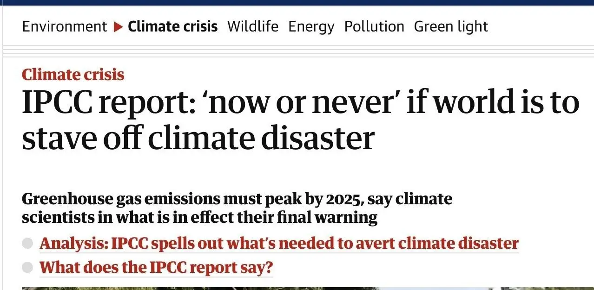
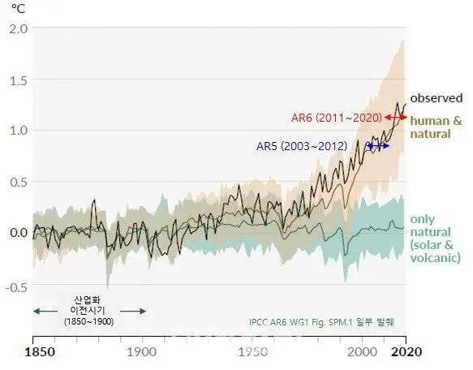

2050년 멸망설은 가속화되는 기후변화 추세가 아직 업데이트 되지 않은 2018년에 예측한 자료고
2022년 4월에 IPCC에서 나온 보고서 자료에 따르면 2040년에 멸망할 것으로 예측됨
*2040년에 다같이 쨘 멸망한다는 거라기보다는
파리기후변화협약에서 마지노선으로 정했던 기준(산업화 이전 대비 지구 온도 1.5도 상승)을 넘어버리면
사실상 인류가 살아갈 수 없을 정도로 기후위기 가속화가 손쓸 수 없이 진행되는 멸망행 열차 출발한다는 얘기
이미 열차는 가속도가 붙고있다는거임